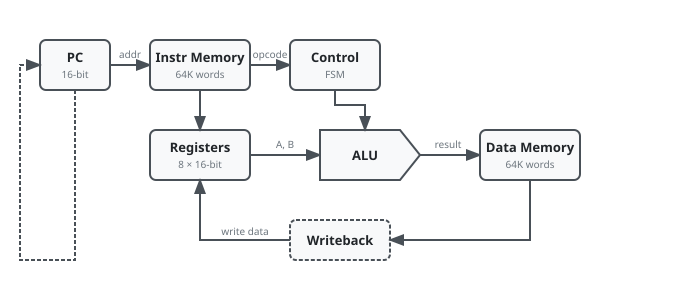
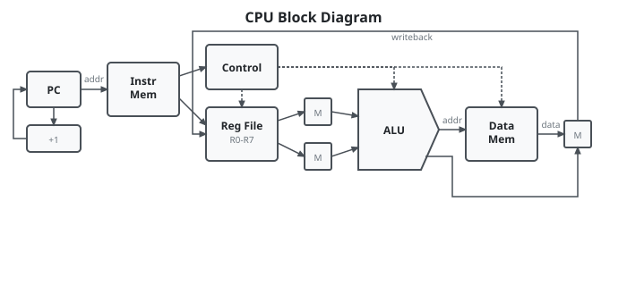
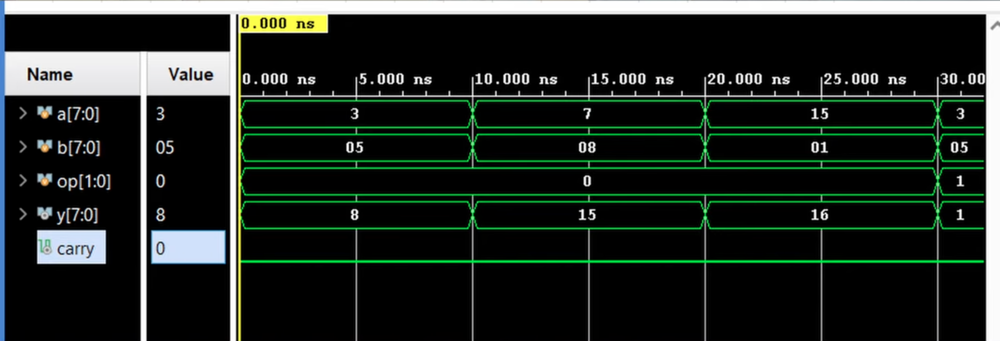
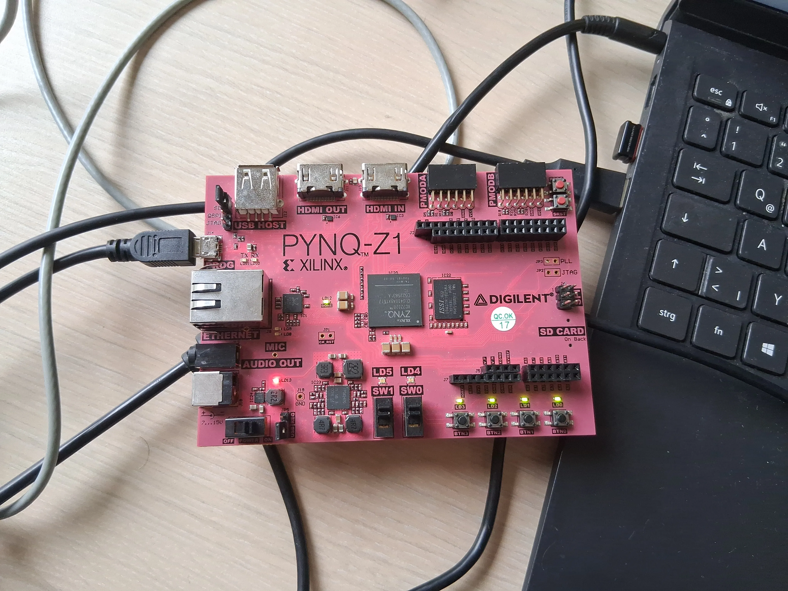

A systematic bottom-up approach: NAND gates → logic synthesis →
ALU → register file → control unit → ISA.
Implemented in Verilog HDL, synthesizable on Xilinx FPGA.
Abstract — A complete 16-bit CPU built from first
principles, starting with a single NAND gate. The project demonstrates
a systematic bottom-up approach through logic gate synthesis, ALU design,
register file architecture, and control unit implementation.
Fully implemented in Verilog HDL with custom assembler and testbenches.

High-level CPU architecture: datapath components and control flow.
Complete NAND-to-CPU journey with explicit documentation at each abstraction level.
Verilog implementation suitable for FPGA synthesis and simulation.
Integrated toolchain: assembler, testbenches, and waveform verification.
Educational framework balancing simplicity with real-world design principles.
1. Motivation
The assertion that "any digital system can be built from NAND gates" is foundational in computer engineering,
yet students rarely witness the complete journey from this primitive to a functioning processor. This
project
addresses that gap by documenting a systematic, reproducible methodology for constructing a 16-bit CPU
from a single universal logic gate.
Goal: demystify complex systems through hierarchical abstraction and practical Verilog experience.
2. Architecture Overview
The CPU follows a simplified Von Neumann architecture with distinct datapath and control components.
Key specifications:
Parameter
Value
Data Width
16 bits
Address Space
64K words
Registers
8 general-purpose (R0–R7)
Instruction Format
Fixed 16-bit
Pipeline
Single-cycle (4 stages)
Clock Target
~50 MHz (FPGA)
Block Diagram

CPU block diagram: PC, instruction memory, register file, ALU, control unit, and data memory.
3. Building Blocks
Every component is constructed hierarchically from NAND gates:
Gate Layer
NOT: Single NAND (A NAND A)
AND: NAND + NOT
OR: De Morgan (NOT inputs, then NAND)
XOR: 4 NANDs
Combinational Modules
Multiplexers: 2:1, 4:1, 8:1 for data routing
Decoders: 3:8 for register selection
Comparators: Equality and magnitude comparison
Arithmetic Units
Half Adder: Sum = XOR, Carry = AND
Full Adder: Two half adders + OR for carry chain
Ripple-Carry Adder: 16-bit chain (educational focus over speed)
4. ALU Design
The Arithmetic Logic Unit supports 8 operations selected by a 3-bit opcode:
Op
Function
Description
000
ADD
A + B
001
SUB
A − B (two's complement)
010
AND
Bitwise AND
011
OR
Bitwise OR
100
XOR
Bitwise XOR
101
NOT
Bitwise NOT(A)
110
SHL
Shift left by 1
111
SHR
Shift right by 1
Status flags: Zero (Z), Negative (N), Carry (C),
Overflow (V).

ILA capture in Vivado: ALU performing basic addition operation with verified output.
5. Control Unit
Finite state machine decoding instructions and generating control signals:
The CPU was synthesized and deployed on a PYNQ-Z1 development board (Xilinx Zynq-7000):

PYNQ-Z1 board with the synthesized 16-bit CPU running test programs.
Resource Utilization
Resource
Utilization
Logic Cells
~1,200 LUTs
Flip-flops
~400 registers
Block RAM
128KB (2 BRAMs)
Max Clock
~50 MHz
Performance
CPI: ~4.2 average (cycles per instruction)
ALU ops: 4 cycles (fetch-decode-execute-writeback)
Memory load: 5 cycles
Branches: 4–5 cycles
8. Conclusion
This project demonstrates that a complete, functional CPU can be constructed from first principles using only
NAND gates as the universal building block. The systematic bottom-up methodology provides:
Clear understanding of abstraction layers in digital systems
Practical experience with Verilog HDL and verification methodologies
Foundation for advanced topics in computer architecture
Extensible platform for pipelining, caching, and ISA enhancements
"Any digital system can be built from NAND gates" — verified through implementation.
Future Work
Pipeline: 5-stage pipeline with hazard detection and forwarding
Cache: L1 instruction and data caches
Interrupts: Exception handling and peripheral support